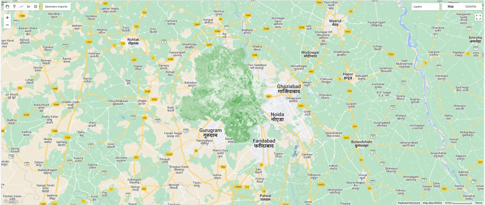
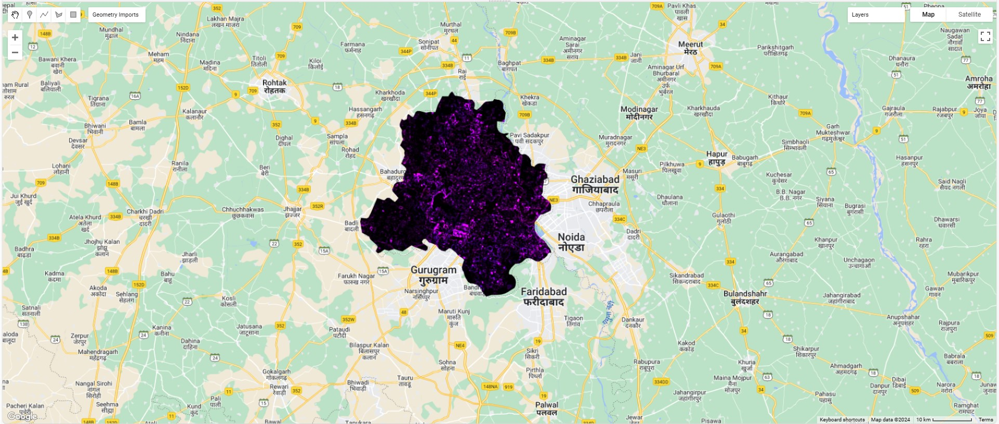
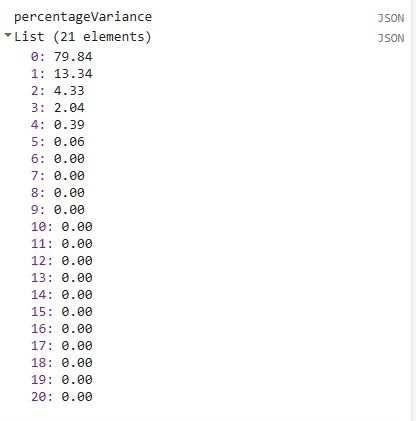
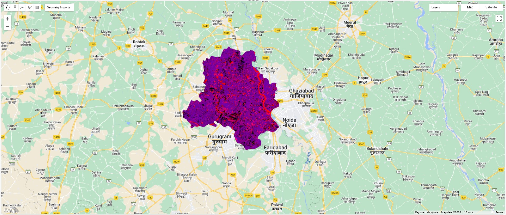

5 Week 5 - An introduction to Google Earth Engine
5.1 Summary
This week I learned Google Earth Engine (GEE). The main content includes GEE basic knowledge and applications. The key application direction is reducing images and image enhancement. The biggest benefit of using GEE is that it speeds up all processes of analysis. The knowledge points will be briefly summarized below.
5.1.1 Google Earth Engine (GEE)
Google Earth Engine is a cloud-based platform developed by Google for planetary-scale environmental data analysis (Google, n/d). It allows users to access a vast amount of geospatial data, including satellite imagery, and perform complex analyses using Google’s computational resources.
GEE uses Javascript (a Website programming language) or Python (sometimes).
5.1.2 Client and server side
Geospatial analysis from the client is converted into Earth Engine requests. Earth Engine objects need to be distinguished from other JavaScript objects or primitives (Google for Developers, n/d).
- Looping: server-side mapping
- Conditionals: server-side conditional

5.1.3 GEE in action
5.1.3.1 Reducing images
ee.Reducer can reduce a collection of images to the extreme value of each pixel
reduceRegion() is used to reduce images by region
reduceNeighborhood() is used to reduce the image by neighborhood (A window of pixels/kernel)
5.1.3.2 Linear regression
Several methods for performing linear regression using reducers:
- ee.Reducer.linearFit()
- ee.Reducer.linearRegression()
- ee.Reducer.robustLinearRegression()
- ee.Reducer.ridgeRegression()
Purpose: View the change over time in pixel values.
5.1.3.3 Joins (use ee.Filter)
join image collections
join feature collections
spatial join, intersect, subset
5.1.4 Practical
This week’s exercises will focus on reducing images and image enhancement. Reducing images can quickly reduce a collection of images to a single image using the mean, median, maximum or minimum value for further analysis. Image enhancement involves NDVI, texture measures and PCA. When the study area is large, the results of these methods can be obtained faster using GEE.

This is the NDVI result using Landsat8 images from June 2021 to October 2022, and the study area is the entire Dehli area. The result clearly show that there is less vegetation coverage near the center of the region, while some small areas with more vegetation coverage appear in the south. These small areas may be nature reserves or parks.

This is the GLCM (Gray-level co-occurrence matrix) texture measure results of the same image. The results show some obvious areas, including airports, industrial areas, etc. These areas are scattered around the edges.


From the numerical results, it can be found that the first component explains 80% of the variance and the second component explains 13% of the variance. These two components are the most critical for the image collection. The combined image from these two components also contains most important information, such as rivers, airports, industrial areas, etc.
5.2 Applications
GEE is a powerful platform that leverages cloud computing to process and analyze vast amounts of Earth observation data for various applications, including remote sensing. Remote sensing applications of GEE span across monitoring environmental changes, agricultural operations, geological activities, and more (Pham-Duc et al., 2023).
There are some notable achievements in water body research. One group of researchers developed an application for mapping inland water bodies in the country of Turkey using remote sensing data integrated into Google Earth Engine (GEE) (Atay and Kaplan, 2023). It shows that GEE is a promising application for processing large amounts of satellite data.
Another group of researchers used Google Earth Engine (GEE) for mapping national inland water bodies in Croatia (Gašparović, 2022). And the results showed that GEE is also a very successful application for handling big satellite data and can accurately extract water bodies on a national level.
In addition, a group of researchers explored the possibility of using the Google Earth Engine (GEE) platform for mapping the Trophic State Index (TSI) of an inland water body (Sherjah, Sajikumar and Nowshaja, 2023). This study illustrates that GEE can quickly help us understand a period of time. Water quality of lakes and rivers over time.
Of course, GEE also has some limitations. Although GEE provides access to large amounts of geospatial data, but it does not have the data that users need, and the quality of the data it provides may vary. Additionally, processing times may vary depending on the complexity of the analysis and the size of the data. Some analyzes can also take a lot of time.
One study used GEE to monitor the reconstruction of Leyte Island in the Philippines after a disaster (Ghaffarian, Rezaie Farhadabad and Kerle, 2020). This study shows that while Google Earth Engine is useful for viewing large areas, it is less suitable for viewing the details of cities because it does not have very high-resolution imagery.
5.3 Reflections
I came across GEE this week and I have to admit that GEE saves a lot of time and has ample remote sensing data. GEE has already completed the work of storing data and configuring the development environment for me. I only need to think about what data I need and what methods to solve the problem, and then use GEE to quickly analyze. Although I spent a lot of time in the initial learning process of GEE and was not very comfortable with new tools, once I understood the entire workflow, GEE brought me great convenience.
The development method using GEE is also different from the R language that was familiar before. In addition to the Javascript language, it requires users to establish a server-side development mentality. This therefore requires a change in the way you think about daily programming. However, the GEE instruction manual contains a large number of detailed tutorials with application examples, which is also helpful for beginners to learn.
In addition, I feel that the way GEE presents analysis results pays more attention to the interaction process with users. We can view the analysis results using an interactive map. And there are already many great interactive applications, which also help users intuitively view and compare different results.